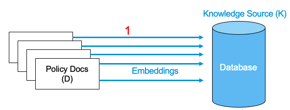
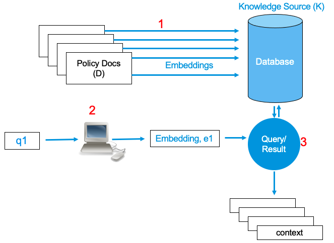
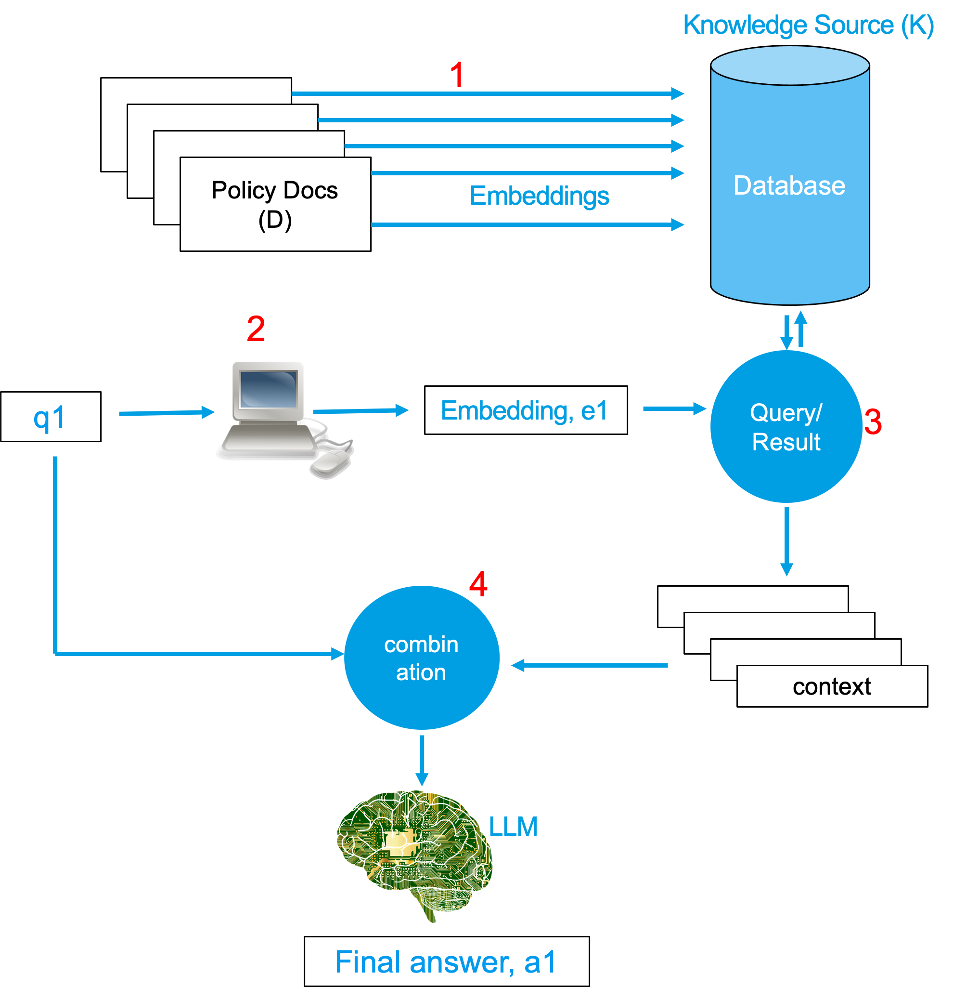

Retrieval Augmented Generation (RAG)
Introduction
RAG is the technique to harness the power of LLMs such that LLMs can be used to serve a user's custom purpose. LLMs are, in almost all the cases, trained with the data that is available online. This means the contents to train LLMs have following properties:
- has too much information , which are oftentimes unnecessary,
- may not contain enough information about the documents that a user is interested in.
Let us take an example of some proprietary documents from your company. You want to use the power of LLM to be able to answer questions from the information contained within those documents. Training of LLMs could pose unnecessary cost; plus, your company may not have enough data or resource or time to train a model for this specific case. This is where the concept of RAG comes into play.
RAG still uses LLMs to be able to answer questions. However, the text string that is fed into the LLM as a prompt is modified such that the LLM is forced to derive answer from the content of the string or the prompt. If we can construct the prompt from the documents that we are interested in, and force the LLM to answer from the content of the prompt, we achieve our goal of acquiring answers from the document that we want the answers from.
Thus, Retrieval Augmented Generation (RAG) is a type of prompt engineering that unleashes the power of pre-trained LLM to extract information from user prescribed documents.
Please find the implementation attempt of RAG in python at this page.
Procedure
The behemoth that is the LLMs that are available online and that have come out as a product of rigorous trainings have no match. But to be able to fulfill our objective of retrieving contents from the documents that the LLMs have not seen before, as stated earlier, we need to modify the prompt that we feed into the LLM.
To make our life easier, let us name the set of these documents as D. Lets say D has all the policy documents of any company C.
Step 1
We should be able to extract the appropriate text from among the D and append that to the prompt to be fed to the LLMs. So, the first thing we need to do is embed these documents in D. These embeddings are stored in some database, preferable in some vector database . This database is more commonly referred to as Knowledge Source (K) . This is the first step of the RAG technique.
Following image shows the idea in a pictorial representation. 
Step 2 and Step 3
When the user inputs a string query q1, we need to search the appropriate items from the database K. This is done by embedding the user query string and performing the search into the database. The output of this search is called a context . To be on the safe side, and to provide with more contexts, more than one context is searched and retured from the database in most of the cases.
In the following pictorial representation, the embedding of the user query q1 is referred to as Step 2 . Searching the database for the appropriate context is Step 3 . 
Step 4
Finally, after the appropriate contexts have been determined, the query string q1 and the contexts are combined to form a large string. In some of the cases, addition of some extra strings could help with search. A combination of the q1 and the context with the additional string is the final prompt that is fed into the LLM.
Following image shows the complete idea is a single picture. 
The LLM then gives out the answer, a1, as it always does.